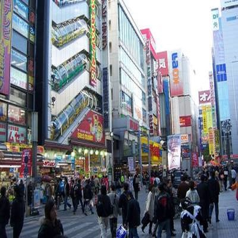
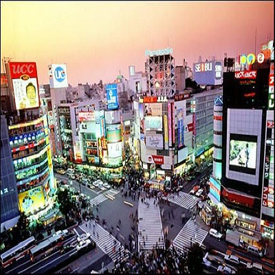

Things To Do and Places To See
Making Your Experience Unforgettable
Want to Learn More?
One of the busiest and most popular areas of Tokyo for foreigners and natives alike to travel to, Asakusa is a cultural hub of Tokyo. It blends old with new, the main attraction is the Thunder Gate, the giant red gate and lantern shown in many travel blogs across the net. While great for taking pictures of the lantern, there is a temple to see in the area, as well as a large market to get souvineers and seasonal foods and items.
Want to Lean More?
A popular destination for tourists both sight seers and anime or gaming nerds alike is Akihabara. This section of Tokyo is famous for its electronics, anime, gaming, and numerous maid cafes. If you want to check out the many figure shops with anime characters you can do that here, if you want to experience maid cafes there are plenty to choose from, the most fanous being 'Maidreamin'. This is not one of the cheaper places in Tokyo, but it is a one of a kind experience that you can only get here.
Want to Learn More?
If you want to get some great pictures of the city skyline, look no further than Tokyo Tower. Being the tallest building in the city, this tower is at a height of 2,080 ft and it's observation deck gives photographers great views of the skyline, an eagle eye of the surrounding neighborhoods, and Mt. Fuji. At around twenty-five dollars a ticket, it isn't to bad for a sight that is definitly worth seeing.
Want to Learn More?
If you are looking for some great nightlife in the city, particularly with clubs, go to Shibuya. This is a very popular district with adults twenty and up. There are plenty of bars in the area as well, you cannot go one-hundred feet without running into a bar.